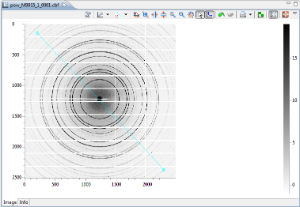

Session 2. DAWN Training - Advanced Data Browsing
Welcome to the second in a series of training sessions to use the DAWN software suite. The aims of this tutorial are :
-
Further features of the plotting system, annotations and regions
-
The plot tool system
-
Plotting tools for 1D data
-
Plotting tools for 2D data
-
Expressions in the Data Browsing perspective
-
History tools
1. The Plot - Customizing
This section gives a brief introduction to a final few aspects of the plotting system before starting to use the tool system.
Annotations
Annotations allow you to make notes on a plot referring to a particular region of a trace or image.
-
Open the file MoKegde_1_15.dat and plot In(I0/It) vs Energy, open the View menu and select Add Annotation (refer to tutorial 1 if you are not sure how to do this).
The Add Annotation dialog will appear, give your annotation a name and click OK.
-
Drag the Annotation label around and the cross marking where the Annotation meets the trace. Edit your Annotation using the Settings action on the plot (or by right-clicking on the annotation and selecting Configure)
-
Exercise 1. open the file pow_M99S5_1_0001.cbf and add an Annotation to the image. What extra information does the Annotation have here compared to the trace annotation?
Regions of Interest (ROIs)
Region selections are heavily use by the Plot Tool system for selecting areas of a trace/image to be analyzed. They can also be used outside of the tool system for marking interesting areas.
-
Open the View menu, go to Selection Region and select add line selection.
You should notice the mouse cursor has changed. Click the mouse once to start drawing the line and again to finish .
After the line is drawn, click on and hold to move it or change its start and end positions.

Exercise 2. Draw some of the other regions (Box, Sector...), how many clicks does it take to draw a Sector, and what does each click define?
Exercise 3. Change the color of the regions you have drawn (where might you be able to do this)?
-
After creating some regions remove them by either (a) right-clicking on a region and selecting delete or (b) using the remove region plot toolbar actions
2. Plotting Tools
The tool system is used to extract extra information from plotted data, whether it is fitting a peak to a trace, or integrating an area on a image. Since traces and images represent very different kinds of data, there are different sets of tools for each type.
Plotting tools are a special type of view that are connected to the plot they were opened on (this is a bit of a generalization but we will get on to that later in the section on History Tools).
Image Tools (or 2D tools)
DAWN includes a comprehensive set of image analysis tools which tends to get longer with every release. The first set of tools were are going to look at are the Profile tools.
Profile tools
-
Open or switch to file powder diffraction image, remove any annotations or ROIs that may be on it.
-
Click the Plot Tools drop down action and select Line Profile, the Line Profile Tool view will open and the mouse cursor changes to the Draw ROI cursor (as in the previous section).
-
Draw a Line ROI on the plot, see how the profile appears in the tool view. Move the line ROI and watch the plot update.
-
Click the Create New Profile action on the Tool views plotting toolbar and draw another line ROI
Each Profile tool will have this action in the same location on the toolbar and is the easiest way to draw the correct ROI for each profile tool.
Exercise 4. Remove the ROIs from the plot and try some of the other profile tools (Box Profile, Radial Profile...)
Exercise 5. Try the Zoom Profile Tool, how is this different from the other Profile Tools?
The nice thing about the Profile Tools is that you can use the Trace Tools on the profiles they create (more on this later).
Masking Tool
From investigating the powder diffraction image you may have noticed that the gap between the detector plates leaves steps in the profile which can affect further data analysis. The Masking Tool can be used to mask out these areas removing there effect from the profile.
-
Clear the powder diffraction image of any ROIs and open the Radial Profile Tool. Draw the sector as close to the centre of the circles as possible. Notice the dips in the data where the edges of the detector plates interfere with the profile.
-
Open the Masking Tool, select Enable lower mask, click Apply. A green mask will appear over the gaps between the plates.
-
Re-open the Radial Profile Tool, notice how the dips in the profile are gone.
Exercise 6. Try the other options in the Masking tool to build up your mask (Direct Draw, Regions).
Exercise 7. Export your mask to file, clear you current mask, then import it again.
Color mapping Tool
In the last tutorial we saw how DAWN automatically sets the Contrast/Brightness (histogram) of an image and that the auto-histogramming method can be selected and tailored in the settings menu.
Sometimes finer adjustment of the image histogram is needed and that is what the Colour Mapping tools is for.
Exercise 8. Open the Colormap tool, change the colormap and use some of the various methods to adjust the image.
Exercise 9. How do you reset the histogram?
The Lock action at the top of the Color Mapping tool can be use to fix the histogram over the current range for all images shown. This is useful seeing how the absolute values of the image intensity varies through an image stack.
Trace Tools (or 1D tools)
The traces tools in DAWN are generally used for extracting parameters from a trace, whether by fitting the traces with a line/peak/function or measuring a distance with the measurement tool. The first set of tools were are going to look at are the Fitting tools.
Fitting Tools
The Fitting Tools work by trying to fit a specific function to the area of a trace specified by a ROI.
Let's first look at the peak fitting tool. This tool was designed to automatically find and fit sharp isolated peaks (like those found in powder diffraction data), it does not work well for traces with overlapping signals as each peak is treated independently.
-
Open the file metalmix.mca and plot Column_1. Open the Peak Fitting Tool, observe how the mouse cursor changes to the Draw ROI cursor.
-
Drag the ROI over a peak, when the mouse is release the peak should be fit automatically. Change the Peak Fitting tool to fit 7 peaks, click the fit new selection action on the tool view and drag the ROI over the entire range of the data.
The tool should automatically find and fit 7 peaks. The parameters obtained from the fit should be visible in the tool view.
Exercise 8. Investigate the other actions available on the tool view. Change the peak profile type to PseudoVoigt.
Exercise 9. Trace tools can be used on the profiles created from images. Open the powder diffraction image used earlier, use the Radial profile tool to create a profile, then fit the profile with the peak fitting tool.
Exercise 10. The line fitting tool works in the same manner as the peak fitting tool but fits polynomial functions instead of peaks. Use the line fitting tool to fit some data.
For complex traces with many in overlapping signals the Function Fitting tool can be used.
Exercise 11. (Advanced) Fit the double peak at 107 pixels in Column_1 of metalmix.mca with two Gaussian peaks and a linear function (use the initial parameters in the image if you get stuck).
Derivative Tool
The Derivative tool is a very simple tool that allows traces to be viewed as, or with their 1st and 2nd derivatives.
-
Open metalmix.mca and plot Column_1 (or switch to that plot if all ready open, close any tools, remove any unwanted ROIs). Open the Derivative Tool and switch between showing the trace, its first and second derivatives and all three at the same time.
Measurement Tool
The measurement tool is used for measuring distances between points on the plot. To use it, open the measurement tool (cursor changes to draw ROI), and draw a line between the two points you want to know the distance between.
The metrics for the distance are shown in the Measurement tool view, giving the distance in x and y, the combined distance and the co-ordinates for the ROI.
3. Expressions
Before going on to look at the History Tools we are going to take a step back and return to the Data Browsing perspective , to look at DAWN's mathematical expression engine.
Being able to perform specific mathematical operations on data is at the heart of data analysis. Whereas the Workflow and Python perspectives are specifically for processing data, sometimes the operations are so simple that it is more effort to load the data into the Python interpreter than to do the actual maths. This is where DAWNs Expression system comes in. Expression are used in many places in DAWN, anywhere the Add/Remove Expressions toolbar actions can be found shows Expressions can be used.
Let's start with an example.
-
Open metalmix.mca (if it is open close all tools, remove all regions). Go to the Data view and click the Add Expression action.
Another row will appear in the Data view, with an editable text entry area. Type Column_1 - Column_2 in the text area and press Enter.
The text you have entered should now go blue and the result of the Column_1 - Column_2 calculation should be plotted. If you mis-typed the equation, the text should go red.
More information on the specific mathematical operations that can be done can be found in the Other Tools section of the DAWN Help pages.
-
Open I22-4996.nxs. Go to the Data view and in the row Rapid2D/data, change the entry in the variable column to say data.
This allows you to refer to the Rapid2D/data data set in an expression by simply typing data.
-
Click the Add Expression action and type im:sobelFilter(data) in the text entry field and press enter. The plot should now show the Sobel filtered image.
-
Click the Add Expression action again and type dat:mean(data,1) in the text entry field and press enter . The plot should show a trace which is the average along the second axis of the image (zero based indexing).
Exercise 12. Calculate the average along the other axis of the image.
Exercise 13. Try some of the functions in the namespaces (dat:, im:....) shown in the Help pages.
(Writing Expressions may be tricky at the moment but the next few releases of DAWN will add content assist to help you write the correct function names and arguments first time)
4. History Tools
You may have noticed that we have been displaying and performing mathematical operations on various data sets, but they have always been on data from the same file. How can we plot traces from two files against each other, or how can we perform maths that needs two image.
The History Tools are the answers to these questions.
Image History
The image history tool allows images of the same size to be compared and combined (using simple mathematical operations or complicated Expressions).
-
Open the file ref-testscale_1_001.img, open the Image History Tool and add the image to the History.
-
Open ref-testscale_1_002.img, notice how the History Tool is still open and active (unlike the other tools when opening a new files).
The History tools are a special case of the Tool system since they need to operate with more than one plot to work correctly.
-
Check the box in the Plot column of the History tool to display the sum of these two images in the plot.
-
Uncheck the Include current plot toolbar action on the History Tool. Now only the image from the History tool should be displayed rather than the combined image.
Exercise 14. Try using some of the other operators to combined the two images.
Exercise 15. Try and use some of the Expression syntax introduced in the last section on some of the images.
Exercise 16. Save your combined image into a nxs file and open it.
Trace History
The trace history tool works in a similar manner to the image history tool but without the ability to use mathematical operators (Expressions can be used but are still in the beta phase since the x axis is cannot be passed to the result).
Exercise 17. Use the History tool to display traces from different files in the same plot (suitable trace data can be provided).
5. Revisiting the Project Explorer
In the first session we showed how a link could be created to your favourite data folders in the Project Explorer. There are more powerful projects, than just plain data projects, designed to work with Diamond visits and databases. This section cannot be performed if you do not have permission to access experimental data at Diamond.
Beamline Data Project [Diamond internal use only]
Beamline data projects are a quick and convenient way to link a visit folder in the Project Explorer.
-
Open a new Beamline Data Project.
-
Choose the beamline you have a visit on and click get visits, select the required visit from the drop-down list and click Finish.
A new project should appear in the Project Explorer, showing the selected visit.
ICAT Archive Project
Outside of Diamond, visit data can still be accessed by DAWN projects, but they must be linked through the ICAT or ISPyB databases.
To link to an ICAT database (if supported by the beamline).
-
Open a new ICAT V4 Archive Project.
-
Enter your fedid and password and a name for the project and click Finish.
Two new projects should appear, the ICAT project and a ICAT downloaded data project.
In an ICAT project, only when the data is opened is it downloaded locally. Exploring the project tree and viewing the file meta data doesn't download the data.
ISPyB Data Project
An ISPyB project works in a similar way to a ICAT project, but shows more meta data. Again, only for beamlines the support the ISpyB database.
Test Yourself
-
Describe three different Regions of Interest, what they look like and how they are drawn.
-
What shape ROI does the Radial profile tool work with?
-
How do you stop artifacts in an image (such as the spacing between detector plates in a Pilatus image) affecting profiles of the image?
-
What are the colors of the edges of a perimeter box profile?
-
What approximations are made by the peak fitting tool?
-
What is the distance between the two highest peaks in Column_1 of metalmix.mca (total distance, dx, and dy).
-
"dataset_1" has the shape [100,200,300], what Expression should would give a [100,200] image which is the mean of the other axis?
-
What 5 things can be saved in an exported nexus file?